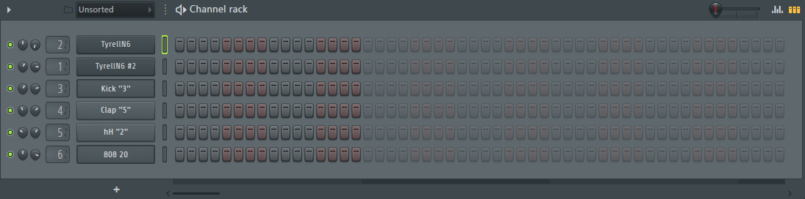

Основы пользования FL Studio 20
FL Studio 20 - цифровая звуковая рабочая станция, т.н. секвенсер ("создатель последовательностей") для написания музыки. В этой программе пользователь может создавать музыку при помощи сведения аудиодорожек и MIDI материала.
FL Studio совместимо с другими программами для создания музыки. Под этим в основном имеют в виду инструменты VST. О них расскажем позже.
FL Studio предоставляет возможность создавать широкий спектр звучания. В этой программе можно создавать как хип-хоп и электронную музыку, изначально создаваемую в секвенсерах, так и рок и даже оркестральные композиции при должном умении и необходимом наборе инструментов.
Рассмотрим интерфейс программы. При запуске вы увидите огромное количество различных кнопок, а также основной плейлист. Рассмотрим самые главные элементы (см. рис. 1):
Многие кнопки повторяют друг друга. Например, кнопку, открывающую список плагинов, можно найти над списком слева и в правом верхнем углу.
Как этим пользоваться?
Итак, чтобы вы не утруждали себя самостоятельным изучением того, как работает эта программа, разберем все по порядку.
Сэмплы
Сэмплы - это готовые аудиодорожки, используемые для написания музыки. Это может быть как запись барабанного удара, так и обработанная запись голоса. Есть два пути добавления сэмпла в свою композицию.
Первый - скачать готовый сэмпл или набор сэмплов из сети Интернет. После этого вам будет необходимо перенести сэмпл в специальную папку для них. Посмотреть путь существующих папок или добавить новую можно во вкладке FILE.
Второй - создать сэмпл самостоятельно. Рассмотрим упрощенный процесс создания сэмплов (см. рис. 2).

Плагины
Плагины - это программы, созданные для обработки и создания звука. Пример плагина вы видели выше - это Edison, встроенный в базовую FL Studio 20. Помимо Edison существует большое множество встроенных плагинов. Например, Fruity reverb, используемый для создания эффекта реверберации у аудиодорожки.
Помимо встроенный плагинов, есть и сторонние. Их можно купить (или иногда скачать бесплатно) в сети Интернет. Основным и самым распространенным видом плагинов является VST. Такие плагины совместимы не только с FL Studio, но и с другими секвенсерами, например, Ableton Live.
Плагины устанавливаются подобно скачиванию сэмплов. При установке укажите путь основной папки для плагинов, либо укажите путь к новой папке во вкладке FILES. После этого откройте список всех плагинов и запустите сканирование. Новый плагин появится в списке.
Все плагины работают по-разному, так что разобрать принцип их работы в обобщенном виде не получится. Для работы с некторыми плагинами-инструментами необходимо проводить долгое время за их изучением.
Паттерны, каналы и Piano roll
То, как конкретно работают все эти функции, мы рассмотрим далее, на примере написания трека. Сейчас разберем эти понятия поверхностно, для общего понимания.
Паттерны - это наборы дорожек, используемые для составления непосредственно всей композиции.
Каналы - это особый параметр, который можно добавить каждому сэмплу или плагину, используемому в композиции. Сделать это можно либо в настройках самого интсрумента или семпла, либо возле в соответствующем параметре дорожки в паттерне. Каналы используются для наложения звуковых эффектов, а также для настройки громкости и сведения.
Piano roll - это инструмент, дающий возможность прописать последовательность нот для одного семлпа или плагина-инструмента. Написание последовательности нот подобно написанию музыки на нотном листе. Вертинкальная ось - тональность (чем выше по оси, тем выше нота), по горизонтали - время. Внизу есть так называемые события, например, Velocity, то бишь громкость отдельных нот.
Как написать трек?
Попробуем написать простую композицию. Жанр, в котором чаще всего используются секвенсеры - хип-хоп. Можно написать несложный бит в стиле исполнителя Playboi Carti.
Для начала, создадим паттерн и очистим его от ненужных предустановленных инструментов (правая кнопка мыши - delete). Далее добавим необходимые нам инструменты. (см. рис. 3)

Для основной мелодии и мелодии-подклада предлагаю использовать синтезатор TyrellN6. Это VST плагин. Чтобы его добавить в паттерн, нажимаем "+" внизу списка инструментов, далее more plugins и ищем установленный заранее инструмент. Далее добавляем синтезатор повторно, чтобы прописать две отдельные мелодии с разными настройками плагина.
Далее добавим сэмплы - бочка (kick), клэп (clap), закрытую тарелку (hihat) и 808 басс. Настраиваем синтезаторы. Также настроим сэмплы, два раза кликая по каждому в паттерне. В открывшемся диалоговом окне будет много опций. Изменим звук относительно других дорожек. (см. рис. 4)

Пропишем мелодию-подклад. Нажимаем на нужную нам дорожку, открываем Piano roll и прописываем мелодию (см. рис. 5).

Далее назначаем дорожку на один из каналов. Открываем каналы, находим назначенный на дорожку канал и добавляем нужные звуковые эффекты. В нашем случае это эквалайзер Equo и ревербератор Fruity Reverb 2. (см. рис. 6)

Создаем еще один паттерн и прописываем основную мелодию с другими настройками синтезатора.
Продолжаем создавать паттерны и прописываем каждую дорожку: бочку, клэп, басс, тарелки.
Чтобы сделать так называемый ролл в хайхетах, в Piano roll нажимаем на магнит и меняем сетку на более мелкую, после чего расставляем тарелки. Снизу, в событиях, меняем громкость отдельных нот, чтобы добавить больше эффектности роллам. (см. рис. 6)

У нас должно получится 6 паттернов с различными инструментами. Можно было прописывать все дорожки в одном паттерне, но так мы не смогли бы сделать нормальную оранжеровку и вариативность в треке отсутствовала бы. (см. рис. 7)

Теперь добавляем все паттерны в плейлист, перетаскивая паттерны в плейлист, создавая мелодию. Получаем следующую последовательность паттернов. (см. рис 8)

Теперь можем создать автоматизацию - автономную регуляцию какого-либо параметра по заданным установкам. Для этого нажимаем на ручку нужного нам параметра правой кнопкой мыши и нажимаем create automation clip, после чего настраиваем саму автоматизацию. В нашей работе автоматизации подверглась громкость дорожки lead. (см. рис. 9)

Открываем каналы. Выбираем мастер канал и на него устанавливаем необходимые для мастеринга плагины. После этого настраиваем каждый канал. Подробнее о том, как делать сведение и мастеринг, Вы можете найти в сети Интернет, здесь же мы рассматриваем самые основы. (см. рис 10).

Итак, все готово. Поздравляем, вы битмейкер! Можете создавать паблик ВКонтакте и продавать биты по 500 рублей.
Спасибо за внимание! Можете посетить мой инстаграм...